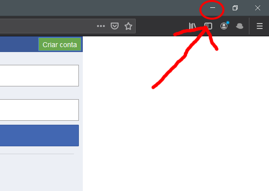
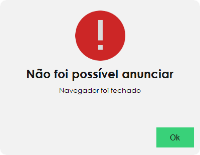

Dica!
Se você está tendo problemas como "Navegador foi fechado"
sem ter fechado o navegador, eis a solução:

Não minimize o Firefox enquanto o FaceBOT
publica os anúncios.
Você pode sobrepor o Firefox com outros programas, mas
não o minimize. Minimiza-lo pode causar problemas como na seguinte imagem:

FaceBOT